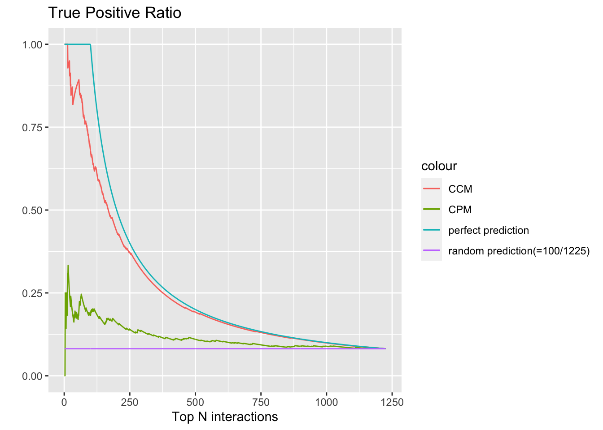

Last updated: 2020-05-26
Checks: 7 0
Knit directory: aaint/
This reproducible R Markdown analysis was created with workflowr (version 1.6.0). The Checks tab describes the reproducibility checks that were applied when the results were created. The Past versions tab lists the development history.
Great! Since the R Markdown file has been committed to the Git repository, you know the exact version of the code that produced these results.
Great job! The global environment was empty. Objects defined in the global environment can affect the analysis in your R Markdown file in unknown ways. For reproduciblity it’s best to always run the code in an empty environment.
The command set.seed(20200315) was run prior to running the code in the R Markdown file. Setting a seed ensures that any results that rely on randomness, e.g. subsampling or permutations, are reproducible.
Great job! Recording the operating system, R version, and package versions is critical for reproducibility.
Nice! There were no cached chunks for this analysis, so you can be confident that you successfully produced the results during this run.
Great job! Using relative paths to the files within your workflowr project makes it easier to run your code on other machines.
Great! You are using Git for version control. Tracking code development and connecting the code version to the results is critical for reproducibility. The version displayed above was the version of the Git repository at the time these results were generated.
Note that you need to be careful to ensure that all relevant files for the analysis have been committed to Git prior to generating the results (you can use wflow_publish or wflow_git_commit). workflowr only checks the R Markdown file, but you know if there are other scripts or data files that it depends on. Below is the status of the Git repository when the results were generated:
Ignored files:
Ignored: .Rhistory
Ignored: .Rproj.user/
Ignored: analysis/.Rhistory
Ignored: output/.Rapp.history
Untracked files:
Untracked: analysis/STRUCTURE.Rmd
Untracked: analysis/ideas.Rmd
Untracked: analysis/mash_prior.Rmd
Untracked: analysis/mm_20200311.Rmd
Untracked: analysis/style.css
Untracked: analysis/temp.Rmd
Untracked: analysis/test.Rmd
Untracked: code/convert_files_mat_to_text.R
Untracked: code/generate_toydata/
Untracked: code/wflow_commands.R
Untracked: data/HG_FLU_hmmerbit_plmc_n5_m30_f50_t0.01_r1-565_id100_b282.a2m
Untracked: data/PDZ
Untracked: data/PDZ.mat
Untracked: data/PF00014_full_length_sequences.fasta
Untracked: data/admixture/
Untracked: data/align300_q10.mat
Untracked: data/testdata1
Untracked: data/testsample
Untracked: data/testsample.csv
Untracked: data/testsample_factor
Untracked: data/toy10.mat
Untracked: output/CPM_array.rds
Untracked: output/fit_flash.rds
Untracked: output/fit_flashier.rds
Untracked: output/fit_flashier_f100.rds
Untracked: output/fit_flashier_f191bf.rds
Untracked: output/fit_flashier_f200.rds
Untracked: output/fit_flashier_nn.rds
Untracked: output/fit_nnpn.rds
Untracked: output/fit_nnpn_bf.rds
Untracked: output/fit_toy_marks.rds
Untracked: output/structure/
Untracked: output/test/
Unstaged changes:
Modified: analysis/_site.yml
Modified: analysis/flash.Rmd
Modified: analysis/pdz.Rmd
Note that any generated files, e.g. HTML, png, CSS, etc., are not included in this status report because it is ok for generated content to have uncommitted changes.
These are the previous versions of the R Markdown and HTML files. If you’ve configured a remote Git repository (see ?wflow_git_remote), click on the hyperlinks in the table below to view them.
| File | Version | Author | Date | Message |
|---|---|---|---|---|
| Rmd | 060275c | Joonsuk Kang | 2020-05-26 | Add Compressed Covariance Matrix |
| html | fae81d1 | Joonsuk Kang | 2020-05-26 | Build site. |
| html | 169900e | Joonsuk Kang | 2020-05-25 | Build site. |
| Rmd | 9820218 | Joonsuk Kang | 2020-05-25 | Toy Data–Marks Lab |
Task: Precision Matrix Estimation with toy data from Ingraham and Marks (2017, ICML) “Variational inference for sparse and undirected models”
For the estimation details, refer to “Precision Matrix Estimation using flash”.
The paper’s code could be found here: https://github.com/debbiemarkslab/persistent-vi
Matrix \(A\) with \(dim(A)=N \times L\) and \(A_{ij}\in \{1,2,\dots,q\}\) where N=400 sequences; L=50 positions; q=20 potts-states
library(tidyverse); library(tictoc); library(pheatmap); library(gridExtra); library(RColorBrewer)── Attaching packages ────────────────────────────────────────────────────────────────────────────────────── tidyverse 1.3.0 ──✓ ggplot2 3.3.0 ✓ purrr 0.3.3
✓ tibble 2.1.3 ✓ dplyr 0.8.4
✓ tidyr 1.0.2 ✓ stringr 1.4.0
✓ readr 1.3.1 ✓ forcats 0.5.0── Conflicts ───────────────────────────────────────────────────────────────────────────────────────── tidyverse_conflicts() ──
x dplyr::filter() masks stats::filter()
x dplyr::lag() masks stats::lag()
Attaching package: 'gridExtra'The following object is masked from 'package:dplyr':
combinelibrary(R.matlab)R.matlab v3.6.2 (2018-09-26) successfully loaded. See ?R.matlab for help.
Attaching package: 'R.matlab'The following objects are masked from 'package:base':
getOption, isOpendata.raw <- readMat("https://github.com/debbiemarkslab/persistent-vi/blob/master/potts/original_dataset.mat?raw=true")
truth.location <- data.raw$C
data.raw <- data.raw$sample[1:400,] # following the paper, used first 400 observations (sequences) out of the 2000 sample
# change data type: from numeric to factor
data.frame(data.raw) %>% mutate_if(is.integer,as.factor) -> data
# change data type: from factor to binary dummies
fastDummies::dummy_cols(data, remove_selected_columns=TRUE) -> data
data <- as.matrix(data)
# save column index as 2-column (position, state) matrix
col.idx <- matrix(as.numeric(unlist(strsplit(substr(colnames(data),2,100), "_"))), byrow=TRUE, ncol=2)To begin with, let’s visualize the data. The figure below shows the frequency of states at each of the first ten positions.
data.frame(position = rep(1:10,each=400),
state = as.factor(data.raw[,1:10])) %>% group_by(position, state) %>%
summarise(count=n()) %>%
ggplot()+
geom_col(aes(x=state, y=count))+
geom_abline(slope=0, intercept=20, col='blue')+
ggtitle("Frequency of States at the first position")+
facet_wrap(~position)
| Version | Author | Date |
|---|---|---|
| 169900e | Joonsuk Kang | 2020-05-25 |
These heatmaps show the frequency for the pair of states at positions 1 and 2, or positions 3 and 4.
idx_x <- 1 # corresponding to the position going into the x axis
idx_y <- 2 # corresponding to the position going into the y axis
mat.temp <- matrix(0, nrow=20, ncol=20)
for (i in 1:400){
val_x <- data.raw[i,idx_x]
val_y <- data.raw[i,idx_y]
mat.temp[val_y,val_x] <- mat.temp[val_y,val_x] + 1
}
rownames(mat.temp) <- 1:20; colnames(mat.temp) <- 1:20
pheatmap(mat.temp, cluster_rows=FALSE, cluster_cols=FALSE,
display_numbers=TRUE, number_format = "%.0f",
main="Frequency of States at Positions 1 and 2")
| Version | Author | Date |
|---|---|---|
| 169900e | Joonsuk Kang | 2020-05-25 |
idx_x <- 3 # corresponding to the position going into the x axis
idx_y <- 4 # corresponding to the position going into the y axis
mat.temp <- matrix(0, nrow=20, ncol=20)
for (i in 1:400){
val_x <- data.raw[i,idx_x]
val_y <- data.raw[i,idx_y]
mat.temp[val_y,val_x] <- mat.temp[val_y,val_x] + 1
}
rownames(mat.temp) <- 1:20; colnames(mat.temp) <- 1:20
pheatmap(mat.temp, cluster_rows=FALSE, cluster_cols=FALSE,
display_numbers=TRUE, number_format = "%.0f",
main="Frequency of States at Positions 3 and 4")
| Version | Author | Date |
|---|---|---|
| 169900e | Joonsuk Kang | 2020-05-25 |
get_CM: function to obtain compressed precision matrix (CPM) and compressed covariance matrix (CCM)# input: L, F, E where matrix X=LF+E
# data column index as [position, state] matrix
# output: compressed precision matrix (CPM) and compressed covariance matrix (CCM)
get_CM <- function(l,f,e, col.idx){
#########################
# Compressed Precision Matrix
# exclude first factor (which captures mean level) and loadings for numerical stability
#apply(l,2,sd) # check standard deviation of the loadings by factors
l2 <- l[,-1]
f2 <- f[-1,]
Psi <- cov(e) # error covariance
Psi.inv <- diag(diag(Psi)^{-1})
Lambda.L <- cov(l2)
Lambda.L.inv <- diag(diag(Lambda.L)^{-1})
Omega <- Psi.inv - Psi.inv %*% t(f2) %*% solve(Lambda.L.inv+f2%*%Psi.inv%*%t(f2)) %*% f2 %*% Psi.inv
# measure position i -- position j interaction as sqrt(sum of squares of Omega_{k, l})
# where position(k)=i and position(l)=j
data.frame(value = c(Omega),
position1 = rep(col.idx[,1], times=nrow(col.idx)),
position2 = rep(col.idx[,1], each=nrow(col.idx))
) %>%
group_by(position1, position2) %>%
summarise(value = sqrt(sum(value^2))) -> sumsq
# compressed precision matrix
matrix(sumsq$value, byrow=FALSE,
ncol=length(unique(col.idx[,1])) # = number of positions
) -> CPM
#########################
# Compressed Covariance Matrix
Sigma <- t(f) %*% cov(l) %*% f + cov(e)
# measure position i -- position j interaction as sqrt(sum of squares of Omega_{k, l})
# where position(k)=i and position(l)=j
data.frame(value = c(Sigma),
position1 = rep(col.idx[,1], times=nrow(col.idx)),
position2 = rep(col.idx[,1], each=nrow(col.idx))
) %>%
group_by(position1, position2) %>%
summarise(value = sqrt(sum(value^2))) -> sumsq
# compressed precision matrix
matrix(sumsq$value, byrow=FALSE,
ncol=length(unique(col.idx[,1])) # = number of positions
) -> CCM
out.list <- list(CPM=CPM, CCM=CCM)
return(out.list)
}plot_CM: function to plot compressed precision matrix (CPM) or compressed covariance matrix (CCM)# input: compressed precision matrix (output from `get_CPM`),
# cutoff: to make the figure to easy to check, do not show cells with values < cutoff
# output: heatmap of compressed precision/covariance matrix (dim = #positions X #positions)
plot_CM <- function(CM, cutoff=0, type=1){
# plot only off-diagonal elements (otherwise, diagonal elements dominate visually)
diag(CM) <- NA
CPM[CM<cutoff] <- NA
if(type==1){pheatmap(CM, cluster_rows=FALSE, cluster_cols=FALSE,
main="Compressed Precision Matrix")}
if(type==2){pheatmap(sqrt(CM), cluster_rows=FALSE, cluster_cols=FALSE,
main="Compressed Precision Matrix: sqrt transformed")}
if(type==3){pheatmap(log(CM), cluster_rows=FALSE, cluster_cols=FALSE,
main="Compressed Precisoin Matrix: log transformed")}
}library(flashier)
# maximum number of factors to be added
fmax <- 300
tic()
fit <- flashier::flash(data, backfit=TRUE, verbose.lvl = 0, greedy.Kmax = fmax,
prior.family = prior.point.normal(),
var.type=2) # column-specific error variance
toc() # takes around 90 seconds95.448 sec elapsed# calculate l, f, e
l <- fit$loadings.pm[[1]]
f <- t(fit$loadings.pm[[2]])
e <- data - (l %*% f)
# obtain compressed precision matrix
list.CM <- get_CM(l, f, e, col.idx)
CPM <- list.CM$CPM
CCM <- list.CM$CCM101 factors were fitted initially, 9 out of which were removed in the backfitting procedure. For the final fit, we have 92 factors.
This is the truth of the underlying interactions. This corresponds to the leftmost plot of the Figure 5 in Ingraham and Marks (2017).
mat.truth <- truth.location
diag(mat.truth) <- NA
pheatmap(mat.truth, cluster_rows=FALSE, cluster_cols=FALSE,
main="True Interactions")
| Version | Author | Date |
|---|---|---|
| 169900e | Joonsuk Kang | 2020-05-25 |
plot_list <- list()
breaksList = seq(-3.5, 7.5, by = 0.5)
colpal <- colorRampPalette(rev(brewer.pal(n =10, name = "RdBu")))(length(breaksList))
mat.temp <- CPM
diag(mat.temp) <- NA
mat.temp[mat.truth!=1] <- NA
pheatmap(log(mat.temp), cluster_rows=FALSE, cluster_cols=FALSE,border_color='white',
color=colpal,breaks = breaksList, silent=TRUE,
main="CPM: Truth==1, log transformed") -> temp.fig
plot_list[[1]] <- temp.fig[[4]]
mat.temp <- CPM
diag(mat.temp) <- NA
mat.temp[mat.truth!=0] <- NA
pheatmap(log(mat.temp), cluster_rows=FALSE, cluster_cols=FALSE,border_color='white',
color=colpal,breaks = breaksList, silent=TRUE,
main="CPM: Truth==0, log transformed") -> temp.fig
plot_list[[2]] <- temp.fig[[4]]
grid.arrange(arrangeGrob(grobs= plot_list,ncol=2))plot_list <- list()
breaksList = seq(-5.5, -0.5, by = 0.5)
colpal <- colorRampPalette(rev(brewer.pal(n =10, name = "RdBu")))(length(breaksList))
plot_list <- list()
mat.temp <- CCM
diag(mat.temp) <- NA
mat.temp[mat.truth!=1] <- NA
pheatmap(log(mat.temp), cluster_rows=FALSE, cluster_cols=FALSE,border_color='white',
color=colpal,breaks = breaksList, silent=TRUE,
main="CCM: Truth==1, log transformed") -> temp.fig
plot_list[[1]] <- temp.fig[[4]]
mat.temp <- CCM
diag(mat.temp) <- NA
mat.temp[mat.truth!=0] <- NA
pheatmap(log(mat.temp), cluster_rows=FALSE, cluster_cols=FALSE,border_color='white',
color=colpal,breaks = breaksList, silent=TRUE,
main="CCM: Truth==0, log transformed") -> temp.fig
plot_list[[2]] <- temp.fig[[4]]
grid.arrange(arrangeGrob(grobs= plot_list,ncol=2))This is the true positive ratio (for the truth of the underlying interactions). This corresponds to the rightmost plot of the Figure 5 in Ingraham and Marks (2017). Along with the flashier-based prediction shown in red, the line corresponding to perfect prediction (where first 100 predictions are the true interactions) and the line corresponding to random prediction (where the true positive ratio is fixed at 100/1225, which is the ratio of true positives) are shown.
data.frame(cpm = CPM[upper.tri(CPM, diag=FALSE)],
ccm = CCM[upper.tri(CCM, diag=FALSE)],
truth = truth.location[upper.tri(truth.location, diag=FALSE)]
) -> df.temp
df.temp %>% arrange(-cpm) %>%
mutate(cumsum_truth = cumsum(truth),
nrow=row_number(),
true_positive = cumsum_truth/nrow)-> df.temp1
df.temp %>% arrange(-ccm) %>%
mutate(cumsum_truth = cumsum(truth),
nrow=row_number(),
true_positive = cumsum_truth/nrow)-> df.temp2
ggplot()+
geom_line(aes(x=1:nrow(df.temp1), y=df.temp1$true_positive, col='CPM'))+
geom_line(aes(x=1:nrow(df.temp2), y=df.temp2$true_positive, col='CCM'))+
geom_line(aes(x=1:nrow(df.temp1), y=c(1:100, rep(100,times=nrow(df.temp)-100))/(1:nrow(df.temp)),
col='perfect prediction'))+
geom_line(aes(x=1:nrow(df.temp1), y=100/1225, col='random prediction(=100/1225)'))+
ylim(0,1)+ylab("")+
xlab("Top N interactions")+ ggtitle("True Positive Ratio")
| Version | Author | Date |
|---|---|---|
| 169900e | Joonsuk Kang | 2020-05-25 |
This is the true positive ratio plot for CCM and first 120 interactions.
ggplot()+
geom_line(aes(x=1:120, y=df.temp2$true_positive[1:120], col='CCM'))+
ylim(0.5,1)+ylab("")+scale_x_continuous(limits=c(0,120),breaks=seq(0,120,by=20))+
xlab("Top N interactions")+ ggtitle("True Positive Ratio")
| Version | Author | Date |
|---|---|---|
| 169900e | Joonsuk Kang | 2020-05-25 |
sessionInfo()R version 3.6.1 (2019-07-05)
Platform: x86_64-apple-darwin15.6.0 (64-bit)
Running under: macOS Catalina 10.15.4
Matrix products: default
BLAS: /Library/Frameworks/R.framework/Versions/3.6/Resources/lib/libRblas.0.dylib
LAPACK: /Library/Frameworks/R.framework/Versions/3.6/Resources/lib/libRlapack.dylib
locale:
[1] en_US.UTF-8/en_US.UTF-8/en_US.UTF-8/C/en_US.UTF-8/en_US.UTF-8
attached base packages:
[1] stats graphics grDevices utils datasets methods base
other attached packages:
[1] flashier_0.2.4 R.matlab_3.6.2 RColorBrewer_1.1-2 gridExtra_2.3
[5] pheatmap_1.0.12 tictoc_1.0 forcats_0.5.0 stringr_1.4.0
[9] dplyr_0.8.4 purrr_0.3.3 readr_1.3.1 tidyr_1.0.2
[13] tibble_2.1.3 ggplot2_3.3.0 tidyverse_1.3.0 workflowr_1.6.0
loaded via a namespace (and not attached):
[1] httr_1.4.1 jsonlite_1.6.1 R.utils_2.9.2 modelr_0.1.6
[5] assertthat_0.2.1 mixsqp_0.3-17 cellranger_1.1.0 yaml_2.2.1
[9] ebnm_0.1-24 pillar_1.4.3 backports_1.1.5 lattice_0.20-38
[13] glue_1.3.2 digest_0.6.25 promises_1.1.0 rvest_0.3.5
[17] colorspace_1.4-1 htmltools_0.4.0 httpuv_1.5.2 Matrix_1.2-18
[21] R.oo_1.23.0 pkgconfig_2.0.3 invgamma_1.1 broom_0.5.5
[25] haven_2.2.0 scales_1.1.0 whisker_0.4 later_1.0.0
[29] git2r_0.26.1 generics_0.0.2 farver_2.0.3 withr_2.1.2
[33] ashr_2.2-50 cli_2.0.2 magrittr_1.5 crayon_1.3.4
[37] readxl_1.3.1 evaluate_0.14 R.methodsS3_1.8.0 fs_1.3.2
[41] fansi_0.4.1 nlme_3.1-143 xml2_1.2.2 truncnorm_1.0-8
[45] tools_3.6.1 data.table_1.12.8 hms_0.5.3 lifecycle_0.2.0
[49] munsell_0.5.0 reprex_0.3.0 irlba_2.3.3 compiler_3.6.1
[53] rlang_0.4.5 grid_3.6.1 rstudioapi_0.11 labeling_0.3
[57] rmarkdown_2.1 gtable_0.3.0 DBI_1.1.0 R6_2.4.1
[61] lubridate_1.7.4 knitr_1.28 rprojroot_1.3-2 stringi_1.4.6
[65] parallel_3.6.1 SQUAREM_2020.2 Rcpp_1.0.4.6 vctrs_0.2.3
[69] fastDummies_1.6.1 dbplyr_1.4.2 tidyselect_1.0.0 xfun_0.12